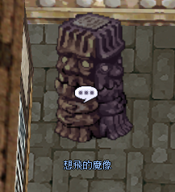

想飛的魔像 · Exchange NPC
NPC „Flight-Seeking Golem" (想飛的魔像)
Prontera-NPC für den Tausch von Fly Wings in Magic Crystals und Goblin Coins in Goblin Shards — die zentrale Enchant-Währungs-Börse für ★-Waffen.
📍 NPC & Standort
Flight-Seeking Golem (想飛的魔像)
Position: prontera 284 253
Funktion: Tausch-NPC für Magic-Crystal-Ressourcen sowie die Goblin-Coin-Familie.

📋 NPC-Information — Deutsch aufklappen
Ein Screenshot eines steinernen NPC, der als "Flying Statue" (想飛的魔像) bezeichnet wird.
🔄 Exchange-Rezepte
1. Fly Wings + Impure Stone
Input: 100 × Fly Wing + 1 × Impure-Filled Stone (充滿雜質的石頭)
Output (zufällig eines der drei):
- 1 × Physical Magic Crystal
- 1 × Magical Magic Crystal
- 1 × Impure-Filled Stone
2. Goblin Coin → Shard
1 × Goblin Copper Coin → 1 × Goblin Shard
1 × Goblin Silver Coin → 10 × Goblin Shards
3. Zeny-Trade (zufällig)
Input: 360.000 – 800.000 Zeny (zufälliger Betrag)
Output: 1–3 Goblin Shards (zufällig)
Woher kommen Impure-Filled Stones? Drop vom Monster Wandering Pastry (流浪的糕餅) in der Hidden Map (隱世地圖).
💡 Praxis-Tipps
- RNG akzeptieren: Rezept 1 ist Glücksspiel — plane Puffer bei Impure Stones ein
- Goblin-Silver sparen: 1:10-Umtausch ist deutlich effizienter als Copper einzeln zu kippen
- Zeny-Option: Nützlich wenn Zeny reichlich vorhanden, aber Goblin-Coin-Supply knapp ist
⚠️ Hinweise
Tausch-Verhältnisse können mit Patches angepasst werden. Aktueller Stand auf der Originalseite.